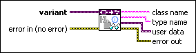

Get User-Defined Refnum Information VI
Owning Palette: Data Type Parsing VIs
Requires: Base Development System
Retrieves user-defined refnum information from the data type stored in variant. This VI returns an error if variant does not contain a user-defined refnum.
A user-defined refnum is a data type for system resources. One example of a user-defined refnum is a DAQmx Task Name.
 | Note The user-defined refnum data type is installed with some add-ons, such as NI-DAQmx. |

 Add to the block diagram Add to the block diagram |
 Find on the palette Find on the palette |